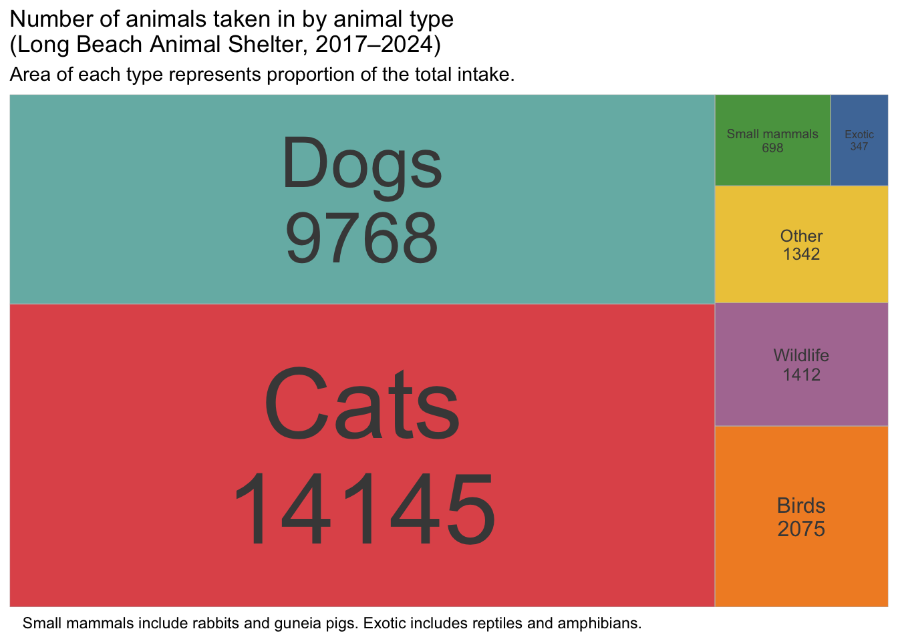
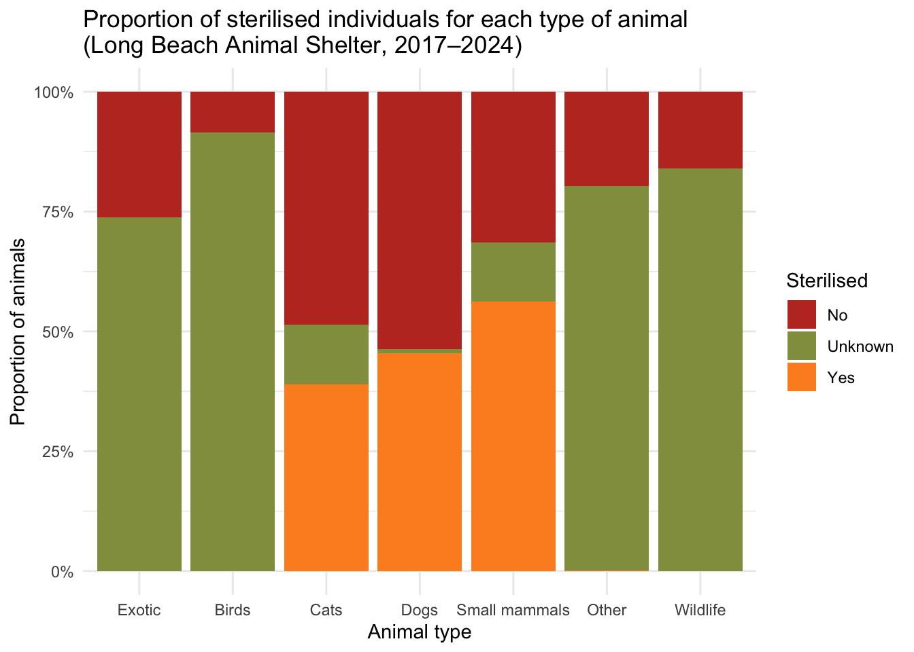

── Attaching core tidyverse packages ──────────────────────── tidyverse 2.0.0 ──
✔ dplyr 1.1.4 ✔ readr 2.1.5
✔ forcats 1.0.0 ✔ stringr 1.5.1
✔ ggplot2 3.5.1 ✔ tibble 3.2.1
✔ lubridate 1.9.4 ✔ tidyr 1.3.1
✔ purrr 1.0.4
── Conflicts ────────────────────────────────────────── tidyverse_conflicts() ──
✖ dplyr::filter() masks stats::filter()
✖ dplyr::lag() masks stats::lag()
ℹ Use the conflicted package (<http://conflicted.r-lib.org/>) to force all conflicts to become errors
library(ggplot2)library(scales)
Attaching package: 'scales'
The following object is masked from 'package:purrr':
discard
The following object is masked from 'package:readr':
col_factor
Install package "strengejacke" from GitHub (`devtools::install_github("strengejacke/strengejacke")`) to load all sj-packages at once!
library(performance)library(broom)library(pROC)
Type 'citation("pROC")' for a citation.
Attaching package: 'pROC'
The following objects are masked from 'package:stats':
cov, smooth, var
library(caret)
Loading required package: lattice
Attaching package: 'caret'
The following object is masked from 'package:purrr':
lift
library(DHARMa)
This is DHARMa 0.4.7. For overview type '?DHARMa'. For recent changes, type news(package = 'DHARMa')
library(kableExtra)
Attaching package: 'kableExtra'
The following object is masked from 'package:dplyr':
group_rows
Introduction
In this report, I’ll present exploratory data analysis of Long Beach Animal Shelter dataset. Additionally, throughout the EDA, I will formulate specific research question(s) which will be addressed in the regression models section.
The workflow and structure of this report is as follows:
Brief introduction about the dataset and available variables
Explore distributions of various single variables
Explore associations between 2 and/or more variables
Impute certain variables based on the available data (age, reproductive status)
Clearly formulate RQ and Hs
Regression analysis (model comparison)
Exploratory data analysis (EDA)
Reading the dataset
Read the data from an online source - TidyTuesday GitHub page.
Rows: 29787 Columns: 22
── Column specification ────────────────────────────────────────────────────────
Delimiter: ","
chr (15): animal_id, animal_name, animal_type, primary_color, secondary_col...
dbl (2): latitude, longitude
lgl (2): outcome_is_dead, was_outcome_alive
date (3): dob, intake_date, outcome_date
ℹ Use `spec()` to retrieve the full column specification for this data.
ℹ Specify the column types or set `show_col_types = FALSE` to quiet this message.
Let’s look at the dataset, to see what we are working with.
There are several variables that already stand out as variables we want to primarily focus on in our EDA. These are:
animal_type
sex
dob + intake_date
intake_condition
intake_type
outcome_date
outcome_type
Before we proceed, let’s factorize all the character variables. If we realize we need some of them in the numeric or character format later on, we can change this afterwards.
Ok let’s look at the summary, get the basic idea of levels of categorical variables etc.
summary(longbeach)
animal_id animal_name animal_type primary_color
A637086: 8 * : 92 cat :14145 black :7540
A637269: 7 luna : 84 dog : 9768 gray :3916
A279626: 6 rocky : 78 bird : 2075 white :3651
A610057: 6 max : 77 wild : 1412 brown :3531
A354875: 5 coco : 64 other : 1332 brown tabby:2242
A542375: 5 (Other):17230 rabbit : 526 tan :1393
(Other):29750 NA's :12162 (Other): 529 (Other) :7514
secondary_color sex dob intake_date
white : 8344 Female :6230 Min. :1993-05-28 Min. :2017-01-01
black : 1902 Male :6854 1st Qu.:2016-07-09 1st Qu.:2018-08-10
brown : 1402 Neutered:5588 Median :2018-11-01 Median :2020-08-29
tan : 830 Spayed :4763 Mean :2018-08-09 Mean :2020-11-17
gray : 783 Unknown :6352 3rd Qu.:2022-02-01 3rd Qu.:2023-04-19
(Other): 922 Max. :2031-03-30 Max. :2024-12-31
NA's :15604 NA's :3591
intake_condition intake_type intake_subtype
normal :13706 stray :21126 otc :15519
under age/weight : 6590 wildlife : 4473 field :11818
injured severe : 2097 owner surrender: 2615 trap : 468
ill severe : 1311 welfare seized : 484 police : 374
ill mild : 1192 confiscate : 399 adoption: 220
injured moderate: 1177 return : 306 (Other) : 998
(Other) : 3714 (Other) : 384 NA's : 390
reason_for_intake outcome_date
owner prob: 432 Min. :2017-01-01
move : 236 1st Qu.:2018-08-18
landlord : 145 Median :2020-09-01
cost : 133 Mean :2020-11-27
no time : 122 3rd Qu.:2023-04-21
(Other) : 935 Max. :2024-12-31
NA's :27784 NA's :177
crossing
7700 E SPRING ST, LONG BEACH, CA 90815 : 251
7700 BLK E SPRING ST, LONG BEACH, CA 90815 : 70
6400 BLK ATLANTIC AVE, LONG BEACH, CA 90805 : 68
3300 BLK SANTA FE AVE, LONG BEACH, CA 90810 : 50
7500 BLK E SPRING ST, LONG BEACH, CA 90815 : 50
4700 BLK E PACIFIC COAST HWY, LONG BEACH, CA 90804: 45
(Other) :29253
jurisdiction outcome_type outcome_subtype latitude
Long Beach :25590 rescue :6680 spcala : 3784 Min. :19.30
Cerritos : 2023 adoption :6290 walkin : 2857 1st Qu.:33.78
Signal Hill : 721 euthanasia :5451 web : 2852 Median :33.81
Los Alamitos: 531 transfer :4869 ill severe: 1869 Mean :33.81
Seal Beach : 373 return to owner:3214 inj severe: 1286 3rd Qu.:33.85
(Other) : 548 (Other) :3096 (Other) :13753 Max. :45.52
NA's : 1 NA's : 187 NA's : 3386
longitude outcome_is_dead was_outcome_alive
Min. :-122.70 Mode :logical Mode :logical
1st Qu.:-118.19 FALSE:23573 FALSE:6214
Median :-118.17 TRUE :6214 TRUE :23573
Mean :-118.15
3rd Qu.:-118.13
Max. : -73.99
geopoint
33.8096122, -118.0826161: 456
33.7700504, -118.1937395: 135
33.8708354, -118.1846106: 118
33.8097185, -118.0929813: 108
33.7898537, -118.1458794: 101
33.810379, -118.0992327 : 73
(Other) :28796
Looking at the data, I notice a few things, that I should do, focus on:
animal_type: lump, investigate distribution.
sex: we can use this variable to infer both sex of the animal and “reproductive state” - whether animal was neutered/spayed, or it animal’s reproductive functioning is intact. Ivestigate distribution.
Use dob (date of birth) and intake_date to compute age at intake. This might be useful for modeling later on, but initially look at the distribution.
Investigate intake_condition. Probably categories will need lumping. Explore distribution.
Investigate intake_type. Probably categories will need lumping. Explore distribution.
Investigate outcome_type. Probably categories will need lumping. Explore distribution. Group the general types into positive outcomes and negative outcomes (will be discussed in more details later) and adoption rate, based on adopted vs. all other outcome types.
Exploring distributions of variables of interest
Animal type
Let’s first check the levels of the variable animal_type and their count, and consider possible lumping strategies.
While it is possible that we would use lumping immediately to identify the most frequent animal types (either by fixed number of levels or proportion of the level vs. total count), we can also merge them manually based on reasoning and supporting literature.
It was reasonable to expect that cats and dogs will be the most prevalent categories. They are followed by birds. Category wild follows and category other is tightly behind. It seems legitimate to keep these levels as they are at this point. Rabbits and guinea pigs could be collapsed into category “Small mammals”. Reptiles and amphibians could be collapsed into “Exotic”, a type frequently used by shelters, pet stores etc. Livestock can definitely be merged with other, considering the group size of the livestock.
These are the categories that we will work with throughout EDA. I can anticipate that perhaps only dogs and cats will be features in the regression models due to significant discrepancy in sub-sample size of these two categories, compared to smaller ones such as birds, wildlife etc. Dataset documentation does not provide precise information about the group “Other”. It is possible that various different species are included in this type.
longbeach %>%count(animal_type, sort =TRUE)
# A tibble: 7 × 2
animal_type n
<fct> <int>
1 Cats 14145
2 Dogs 9768
3 Birds 2075
4 Wildlife 1412
5 Other 1342
6 Small mammals 698
7 Exotic 347
We can use this variable for some basic distribution/count visualisation now.
library(jcolors)library(paletteer)library(ggpomological)longbeach %>%count(animal_type) %>%mutate(animal_type =fct_reorder(animal_type, n)) %>%ggplot(aes(x = animal_type, y = n, fill = animal_type)) +geom_col() +theme_minimal() +coord_flip() +labs(x =NULL, y ="Number of animals", title ="Number of animals taken in by animal type (Long Beach Animal Shelter, 2017–2024)", caption ="Small mammals include rabbits and guneia pigs. Exotic includes reptiles and amphibians.", fill ="Animal type") +scale_y_continuous(breaks =seq(0,15000,2500)) +#scale_fill_brewer(palette = "Spectral", guide = guide_legend(reverse = TRUE)) +#scale_fill_dutchmasters(palette = "milkmaid") + #scale_fill_pomological() + #scale_fill_paletteer_d("PrettyCols::Autumn") +#scale_fill_jcolors(palette = "pal7") + scale_fill_paletteer_d("ggthemes::Tableau_10") +theme(plot.title.position ="plot",plot.caption =element_text(hjust =-0.5),legend.position="none")
# Consider removing the legend
We can play around a little bit and try so called “lollipop” visualization, as it has been said to be a more modern, appealing version of bar charts.
longbeach %>%count(animal_type) %>%mutate(animal_type =fct_reorder(animal_type, n)) %>%ggplot(aes(x = n, y = animal_type)) +geom_segment(aes(x =0, xend = n, yend = animal_type, color = animal_type), linewidth =3) +geom_point(aes(color = animal_type), size =10) +geom_text(aes(label = n), color ="#313131", size =2.5) +labs(y =NULL, x ="Number of animals", title ="Number of animals taken in by animal type (Long Beach Animal Shelter, 2017–2024)", caption ="Small mammals include rabbits and guneia pigs. Exotic includes reptiles and amphibians.", fill ="Animal type") +scale_x_continuous(breaks =seq(0,15000,2500)) +theme_minimal() +theme(plot.title.position ="plot",plot.caption =element_text(hjust =-0.5),legend.position="none") +scale_color_paletteer_d("ggthemes::Tableau_10")
I want to play around with different visualizations a bit and thought that while bar chart might be very simple to read and informative for both an advanced as well as lay reader, I can try out treemaps.
library(treemapify)longbeach %>%count(animal_type) %>%mutate(label_size =rescale(n, to =c(8, 60))) %>%# scale size between 3 and 8ggplot(aes(area = n, fill = animal_type, label =paste0(animal_type, "\n", n))) +geom_treemap() +geom_treemap_text(aes(size = label_size), colour ="#474747", place ="centre", grow =FALSE) +scale_size_identity() +scale_fill_paletteer_d("ggthemes::Tableau_10") +labs(title ="Number of animals taken in by animal type \n(Long Beach Animal Shelter, 2017–2024)", subtitle ="Area of each type represents proportion of the total intake.", caption ="Small mammals include rabbits and guneia pigs. Exotic includes reptiles and amphibians.") +theme_minimal() +theme(plot.title.position ="plot",plot.caption =element_text(hjust =0.05),legend.position="none") +coord_fixed(1)

Fine for now. We can always return to these graphs and polish the appearance. We can now apply the same logic to investigate other variables!
###Intake condition
Let’s first check the levels of the variable intake_condition and their count, and consider possible lumping strategies.
Huh, alright, there are 17 different conditions. It appears that we could collapse illness and injury together in “physical condition”. Let’s explore lumping a bit, with fixed number of categories and proportions of total sample.
#Fixed number of categorieslongbeach %>%mutate(intake_condition =fct_lump(intake_condition, n =10)) %>%count(intake_condition, sort =TRUE)
# A tibble: 11 × 2
intake_condition n
<fct> <int>
1 normal 13706
2 under age/weight 6590
3 injured severe 2097
4 ill severe 1311
5 ill mild 1192
6 injured moderate 1177
7 injured mild 1093
8 ill moderatete 942
9 Other 742
10 fractious 654
11 feral 283
#Number of categories based on proportionslongbeach %>%mutate(intake_condition =fct_lump(intake_condition, prop = .03)) %>%count(intake_condition, sort =TRUE)
# A tibble: 9 × 2
intake_condition n
<fct> <int>
1 normal 13706
2 under age/weight 6590
3 injured severe 2097
4 Other 1679
5 ill severe 1311
6 ill mild 1192
7 injured moderate 1177
8 injured mild 1093
9 ill moderatete 942
Based on category inspection I decided the following:
merge illness and injury in “physical” category
I am also considering joining with behavioral (mild, moderate, severe) or collapsing these categories into “other” as the number of observations is really small
There seem to be some specific smaller categories (aged, welfare seizures etc.), which will be collapsed into “other”.
Let’s now use same visualizations as before for animal_type to plot distribution of intake_condition.
longbeach %>%count(intake_condition) %>%mutate(intake_condition =fct_reorder(intake_condition, n)) %>%ggplot(aes(x = intake_condition, y = n, fill = intake_condition)) +geom_col() +theme_minimal() +coord_flip() +labs(x ="Intake condition", y ="Number of animals", title ="Number of animals taken in, by intake condition \n(Long Beach Animal Shelter, 2017–2024)", caption ="Physical conditions include illnesses and injuries.", fill ="Intake condition") +scale_y_continuous(breaks =seq(0,15000,2500)) +scale_fill_manual(values = intake_colors) +theme(plot.title.position ="plot",plot.caption =element_text(hjust =-0.3),legend.position="none")
# Consider removing the legend
We can play around a little bit and try so called “lollipop” visualization, as it has been said to be a more modern, appealing version of bar charts.
longbeach %>%count(intake_condition) %>%mutate(intake_condition =fct_reorder(intake_condition, n)) %>%ggplot(aes(x = n, y = intake_condition)) +geom_segment(aes(x =0, xend = n, yend = intake_condition, color = intake_condition), linewidth =4) +geom_point(aes(color = intake_condition), size =11) +geom_text(aes(label = n), color ="#313131", size =2.5) +labs(y =NULL, x ="Number of animals", title ="Number of animals taken in, by intake condition \n(Long Beach Animal Shelter, 2017–2024)", caption ="Physical conditions include illnesses and injuries.", fill ="Animal type") +scale_x_continuous(breaks =seq(0,15000,5000)) +theme_minimal() +theme(plot.title.position ="plot",plot.caption =element_text(hjust =-0.3),legend.position="none") +scale_color_manual(values = intake_colors)
I want to play around with different visualizations a bit and thought that while bar chart might be very simple to read and informative for both an advanced as well as lay reader, I can try out treemaps.
library(treemapify)longbeach %>%count(intake_condition) %>%mutate(label_size =rescale(n, to =c(10, 40))) %>%# scale size between 3 and 8ggplot(aes(area = n, fill = intake_condition, label =paste0(intake_condition, "\n", n))) +geom_treemap() +geom_treemap_text(aes(size = label_size), colour ="#474747", place ="centre", grow =FALSE) +scale_size_identity() +scale_fill_manual(values = intake_colors) +labs(title ="Number of animals taken in, by intake condition \n(Long Beach Animal Shelter, 2017–2024)", subtitle ="Area of each intake condition represents proportion of the total intake.", caption ="Physical conditions include illnesses and injuries.") +theme_minimal() +theme(plot.title.position ="plot",plot.caption =element_text(hjust =0.05),legend.position="none") +coord_fixed(1)
From these plots we can see that the majority of the animals taken into the Long Beach Animal Shelter are in normal physical condition. About half less is animals that are under age or under weight. This is roughly compared to all three categories of hindered physical condition combined ~ mild, moderate, severe. At this point I start thinking that intake condition might be an interesting predictor in the regression models. At this point we can plot animal_type and intake_condition together and explore in what conditions are different animals usually taken into the shelter.
Combining animal type and intake condition
For each type of animal, what number/proportion of them arrived in each intake condition?
longbeach %>%mutate(animal_type =fct_relevel(animal_type, "Other", "Wildlife", "Exotic", "Small mammals", "Birds", "Dogs", "Cats")) %>%mutate(intake_condition =fct_relevel( intake_condition,"Other","Severe physical","Moderate physical","Mild physical","Under age/weight","Normal")) %>%ggplot(aes(x = animal_type, fill = intake_condition)) +geom_bar() +theme_minimal() +labs(x ="Animal type", y ="Number of animals",title ="Number of animals with different intake conditions for each animal type \n(Long Beach Animal Shelter, 2017–2024)",fill ="Intake condition") +scale_fill_manual(values = intake_colors, guide =guide_legend(reverse =TRUE))
While this visualization is informative about absolute number of observations of each intake condition for different animal types. We again see that cats, followed by dogs dominate in overall number of intakes. Interesting observation is that there is quite a large proportion of cats taken in under-aged or under-weight condition. Majority of dogs on the other hand appear to be accepted in normal condition. It might also be good to visualize proportions within each group, to get an insight into more specific between-animal type differences, that might remain hidden in column-plotting with huge number of observations between the groups.
longbeach %>%filter(animal_type !="livestock") %>%mutate(animal_type =fct_relevel(animal_type, "Other", "Wildlife", "Exotic", "Small mammals", "Birds", "Dogs", "Cats")) %>%mutate(intake_condition =fct_relevel( intake_condition,"Severe physical","Moderate physical","Mild physical","Other","Under age/weight","Normal")) %>%ggplot(aes(x = animal_type, fill = intake_condition)) +geom_bar(position ="fill") +theme_minimal() +labs(x ="Animal type", y ="Proportion of the specific intake condition (%)",title ="Proportion of specific intake condition for each animal type \n(Long Beach Animal Shelter, 2017–2024)",fill ="Intake condition") +coord_flip() +scale_y_continuous(labels =label_percent(), breaks =seq(0, 1, 0.2)) +scale_fill_manual(values = intake_colors, guide =guide_legend(reverse =TRUE))
OK, let’s try a slightly different approach and tweak the plot by adding percentage scale on both side of the axis, order animal types based on percentage of normal intake condition and add total number of counts next to animal names.
# Let's first pull the order of the names by proportion of normal intake condition - I tried doing it in the same pipeline, but it does not workanimal_order <- longbeach %>%count(animal_type, intake_condition) %>%group_by(animal_type) %>%mutate(type_n =sum(n),p = n /sum(n),animal_type_lab =paste0(animal_type, " (", type_n, ")")) %>%filter(intake_condition =="Normal") %>%arrange(p) %>%pull(animal_type_lab)longbeach %>%count(animal_type, intake_condition) %>%group_by(animal_type) %>%mutate(type_n =sum(n)) %>%ungroup() %>%mutate(animal_type_lab =paste0(animal_type, " (", type_n, ")"),animal_type_lab =factor(animal_type_lab, levels = animal_order),intake_condition =fct_relevel(intake_condition,"Severe physical","Moderate physical","Mild physical","Other","Under age/weight","Normal")) %>%ggplot(aes(x = animal_type_lab, y = n, fill = intake_condition)) +geom_col(position ="fill") +theme_minimal() +labs(x ="Animal type", y ="Proportion of the specific intake condition (%)",title ="Proportion of specific intake condition for each animal type \n(Long Beach Animal Shelter, 2017–2024)", subtitle ="Numbers next to the animal types represent number of individuals from that group.",fill ="Intake condition") +coord_flip() +scale_y_continuous(labels =label_percent(), breaks =seq(0, 1, 0.2),sec.axis =dup_axis(labels =label_percent(), name =NULL)) +scale_fill_manual(values = intake_colors, guide =guide_legend(reverse =TRUE))
Considering this visualisation, there are few things we can think about:
It seems that exotic animals and small mammals usually arrive/are accepted in normal condition. Possibly as they might escape from home for a short while and are registered into the system upon arrival, however owners potentially pick them up soon. Thus these are not animals that would linger the streets for a long time.
Dogs are admitted to the shelter in normal condition much more frequently compared to cats.
However, cats have really high proportion of under-aged or under-weight intakes. It is possible, that stray cats give birth prematurely more often compared to dogs. On the other hand, it is possible that survival on the streets is the hardest for cats, thus leaving a lot of members of the stray cat community under-fed and under-weight.
Birds and wildlife have high proportion of (severe) physical conditions. Perhaps a lot of members of these groups arrive to the shelter because of the injury in the first place. It is possible that wild animals roam into urban environment or that birds have all sorts of accidents and are then injured brought to the shelter by members of the community or taken in by members of the shelter.
Intake type
Based on the points raised in the end of the previous section, we can consider looking into intake_type variable.
Majority of the animals are either stray or come from wildlife, and a noticeable proportion of animals being surrendered by the owner. Due to highly unbalanced groups, I will not explore this variable for now, will just check the count for each type of intake for different types of animals and visualize it.
longbeach %>%count(animal_type, intake_type) %>%mutate(animal_type =fct_relevel(animal_type,"Cats", "Dogs", "Small mammals", "Exotic")) %>%ggplot() +aes(animal_type, n, fill = intake_type) %>%geom_col(position ="fill") +#geom_col() + theme_minimal() +labs(y ="Proportion of animals", x ="Animal type", fill ="Intake type", title ="Proportion of animals by different intake types for each type of animal \n(Long Beach Animal Shelter, 2017–2024)") +scale_fill_paletteer_d("ggthemes::Classic_Green_Orange_12")
Majority of dogs and cats in particular are stray animals and a noticeable percentage of animals in those groups coming by owner’s surrender. Birds, wildlife and other species are predominantly found in wild life, and presumably injured or ill, as discussed in the end of the previous section.
Sex
Let’s now proceed with the sex variable. During initial data inspection, I noticed that there are not only sex information, but also whether animal was neutered/spayed and is thus not sexually active/capable of reproduction anymore. As I am still seriously considering modeling adoption rate in regression models, this information might be valuable. Let’s first look into the variable, mutate it and visualize.
longbeach %>%count(sex)
# A tibble: 5 × 2
sex n
<fct> <int>
1 Female 6230
2 Male 6854
3 Neutered 5588
4 Spayed 4763
5 Unknown 6352
OK, I will leave category Unknown as it is. Then, I will split the original sex variable into two, one about sex and one about reproductive state. From the meaning of the words, we can infer then when the condition is “Neutered” it refers to the male, and when the condition is “Spayed”, it refers to the females. After looking into online forum discussion and consulting various AIs, I concluded that when reproductive status is listed, we can infer the sex. When it is not, we can conclude that the reproductive state is intact and biological sex is listed.
Based on this I will create binary variable starilised, which will be 1 if current sex is “Spayed” or “Neutered” and 0 if biological sex is listed. I will recode values in the original sex category to only include information about biological sex.
longbeach <- longbeach %>%mutate(sterilised =case_when(sex %in%c("Spayed", "Neutered") ~"Yes", sex %in%c("Male", "Female") ~"No", sex =="Unknown"~"Unknown"),sex =case_when(sex %in%c("Spayed", "Female") ~"Female", sex %in%c("Male", "Neutered") ~"Male", sex =="Unknown"~"Unknown"))longbeach %>%count(sex, sterilised) %>%ggplot() +aes(sex, n, fill = sterilised) +geom_col(position ="dodge") +#geom_col(position = "fill") + labs(x ="Sex", y ="Number of animals", fill ="Sterilised", title ="NUmber of sterilised and unstarilised animals by sex \n(Long Beach Animal Shelter, 2017–2024)") +theme_minimal() +scale_fill_pomological()
longbeach %>%count(sex, sterilised)
# A tibble: 5 × 3
sex sterilised n
<chr> <chr> <int>
1 Female No 6230
2 Female Yes 4763
3 Male No 6854
4 Male Yes 5588
5 Unknown Unknown 6352
Using the proportion graph, we can see that approximately equal proportion (~43%) of both biological sexes is sterilized. From the count/column graph, we can see that males are more frequently taken in at the animal shelter. 6352 animals have unknown sex and/or sterilization status.
At this point we could plot sex and sterilisation in assocation with previously handled variables - intake_condition and animal_type. I will select only one at this point and then mode on to other variables. I choose animal_type to see whether animals, especially the most frequent ones, differ in their sterilization rate and sex. I will focus on proportions, as we have clearly established thus far that dogs and cats are by far the most dominant animal types and visualization of other types besides them is much more informative in proportions.
longbeach %>%count(animal_type, sex) %>%ggplot() +aes(animal_type, n, fill = sex) %>%geom_col(position ="fill") +#geom_col() + theme_minimal() +labs(y ="Proportion of animals", x ="Animal type", fill ="Sex", title ="Proportion of different sexes for each type of animal \n(Long Beach Animal Shelter, 2017–2024)") +scale_fill_pomological()

We can see that in exotic animals, birds, wildlife and others, very high proportion of those groups have unknown sex. It seems reasonable to assume that this could happen due to accurate genitalia identification is much more difficult to do in these groups, compared to cats, dogs and small mammals. In those groups, male and female sex appear to be approximately balanced. About 10% of cats and small mammals have unknown sex. About 60% of dogs are males and the rest are mostly females and unknown representatives in very small percentage.
Let’s look at sterilised.
longbeach %>%count(animal_type, sterilised) %>%ggplot() +aes(animal_type, n, fill = sterilised) %>%geom_col(position ="fill") +#geom_col() + theme_minimal() +labs(y ="Proportion of animals", x ="Animal type", fill ="Sterilised", title ="Proportion of sterilised individuals for each type of animal \n(Long Beach Animal Shelter, 2017–2024)") +scale_fill_pomological()
High percentage of individuals with unknown sterilization status in exotic, birds, wildlife and other could be expected. We have seen in previous analysis that a noticeable proportion of those animals are wild animals, thus there is probably no record kept about their sterilization status. Additionally, as mentioned before identification of genitalia and related markers is much more difficult in these species. For cats, dogs and small mammals, sterilization rate is around 40-50%. We can infer some information from this.
If animals have already been taken to a shelter before, they were most likely sterilized, as this is a standard procedure during the capture and stay. While approximately a half of the animals therefore seem to have been captured before, or surrendered/escaped by/from the owner, who put them through the procedure, about the half of these animals have not been sterilized, implying this is their first time in the shelter and are arguably very young. I could explore this further by creating tile plots with intake_type and count on axes, and sterilisation as fill, faceted for animal types. It would also be possible to perform statistical tests (chi-square) to investigate whether there are significant differences in sterilized vs. unsterilized individuals among different intake or animal types.
summary(longbeach)
animal_id animal_name animal_type primary_color
A637086: 8 * : 92 Exotic : 347 black :7540
A637269: 7 luna : 84 Birds : 2075 gray :3916
A279626: 6 rocky : 78 Cats :14145 white :3651
A610057: 6 max : 77 Dogs : 9768 brown :3531
A354875: 5 coco : 64 Small mammals: 698 brown tabby:2242
A542375: 5 (Other):17230 Other : 1342 tan :1393
(Other):29750 NA's :12162 Wildlife : 1412 (Other) :7514
secondary_color sex dob intake_date
white : 8344 Length:29787 Min. :1993-05-28 Min. :2017-01-01
black : 1902 Class :character 1st Qu.:2016-07-09 1st Qu.:2018-08-10
brown : 1402 Mode :character Median :2018-11-01 Median :2020-08-29
tan : 830 Mean :2018-08-09 Mean :2020-11-17
gray : 783 3rd Qu.:2022-02-01 3rd Qu.:2023-04-19
(Other): 922 Max. :2031-03-30 Max. :2024-12-31
NA's :15604 NA's :3591
intake_condition intake_type intake_subtype
Mild physical : 2285 stray :21126 otc :15519
Moderate physical: 2119 wildlife : 4473 field :11818
Severe physical : 3408 owner surrender: 2615 trap : 468
Normal :13706 welfare seized : 484 police : 374
Under age/weight : 6590 confiscate : 399 adoption: 220
Other : 1679 return : 306 (Other) : 998
(Other) : 384 NA's : 390
reason_for_intake outcome_date
owner prob: 432 Min. :2017-01-01
move : 236 1st Qu.:2018-08-18
landlord : 145 Median :2020-09-01
cost : 133 Mean :2020-11-27
no time : 122 3rd Qu.:2023-04-21
(Other) : 935 Max. :2024-12-31
NA's :27784 NA's :177
crossing
7700 E SPRING ST, LONG BEACH, CA 90815 : 251
7700 BLK E SPRING ST, LONG BEACH, CA 90815 : 70
6400 BLK ATLANTIC AVE, LONG BEACH, CA 90805 : 68
3300 BLK SANTA FE AVE, LONG BEACH, CA 90810 : 50
7500 BLK E SPRING ST, LONG BEACH, CA 90815 : 50
4700 BLK E PACIFIC COAST HWY, LONG BEACH, CA 90804: 45
(Other) :29253
jurisdiction outcome_type outcome_subtype latitude
Long Beach :25590 rescue :6680 spcala : 3784 Min. :19.30
Cerritos : 2023 adoption :6290 walkin : 2857 1st Qu.:33.78
Signal Hill : 721 euthanasia :5451 web : 2852 Median :33.81
Los Alamitos: 531 transfer :4869 ill severe: 1869 Mean :33.81
Seal Beach : 373 return to owner:3214 inj severe: 1286 3rd Qu.:33.85
(Other) : 548 (Other) :3096 (Other) :13753 Max. :45.52
NA's : 1 NA's : 187 NA's : 3386
longitude outcome_is_dead was_outcome_alive
Min. :-122.70 Mode :logical Mode :logical
1st Qu.:-118.19 FALSE:23573 FALSE:6214
Median :-118.17 TRUE :6214 TRUE :23573
Mean :-118.15
3rd Qu.:-118.13
Max. : -73.99
geopoint sterilised
33.8096122, -118.0826161: 456 Length:29787
33.7700504, -118.1937395: 135 Class :character
33.8708354, -118.1846106: 118 Mode :character
33.8097185, -118.0929813: 108
33.7898537, -118.1458794: 101
33.810379, -118.0992327 : 73
(Other) :28796
I will proceed to the next variable, outcome_type. Let’s see what are the levels of the variable and how we could collapse, lump them.
I decide for keeping all the outcomes that are at least 2.5% of the complete sample and lump others. in case of condition “shelter, neuter, return” I am not completely sure what it means as different webpages have different interpretations depending on the context. I will therefore collapse this category with “others”.
# A tibble: 8 × 2
outcome_type n
<fct> <int>
1 Rescue 6680
2 Adoption 6290
3 Euthanasia 5451
4 Transfer 4869
5 Return to owner 3214
6 Other 2333
7 Died 763
8 <NA> 187
Let’s now create a column adopted. It will be “Yes” in case of outcome type “adoption” and “No” for all the other outcome types. At this point, I remove 187 rows from the dataset, as they hame missing values for outcome_type.
Let’s also create a binary + other category outcome_type_posneg where we will collapse outcome_type into positive if animal survived, negative if it did not and other for other level(s).
# A tibble: 1 × 3
outcome_type was_outcome_alive n
<fct> <lgl> <int>
1 Other TRUE 2333
There was a discrepancy in number of my “positive outcomes” and original “alive” outcome in variable was_outcome_alive. I checked what are outcome types in my active dataset that are alive, but are not “positive” in newly created outcome_type_posneg column. All of them are in “other” outcome type. Maybe we can filter out others in future visualization and analysis.
OK! Let’s finally proceed to plotting outcome_type distribution.
outcome_type_posneg_colors <-c("Positive"="#4c9b82","Negative"="#e15859","Other"="#ebcb2a")longbeach %>%group_by(outcome_type) %>%summarise(n =n(),outcome_type_posneg =first(outcome_type_posneg)) %>%mutate(outcome_type =fct_reorder(outcome_type, n)) %>%ggplot(aes(x = outcome_type, y = n, fill = outcome_type_posneg)) +geom_col() +theme_minimal() +coord_flip() +labs(x ="Outcome type", y ="Number of animals", title ="Number of animals by outcome type (Long Beach Animal Shelter, 2017–2024)", fill ="Outcome type") +#scale_y_continuous(breaks = seq(0,15000,2500)) + #scale_fill_brewer(palette = "Spectral", guide = guide_legend(reverse = TRUE)) +#scale_fill_dutchmasters(palette = "milkmaid") + #scale_fill_pomological() + #scale_fill_paletteer_d("PrettyCols::Autumn") +scale_fill_manual(values = outcome_type_posneg_colors) +theme(plot.title.position ="plot",plot.caption =element_text(hjust =-0.3),legend.position="none")
# Consider removing the legend
This could be a nice lollipop plot!
longbeach %>%group_by(outcome_type) %>%summarise(n =n(),outcome_type_posneg =first(outcome_type_posneg)) %>%mutate(proportion = n /sum(n), label = scales::percent(proportion, accuracy =0.1),outcome_type =fct_reorder(outcome_type, n) ) %>%ggplot(aes(x = n, y = outcome_type)) +geom_segment(aes(x =0, xend = n, yend = outcome_type, color = outcome_type_posneg), linewidth =5) +geom_point(aes(color = outcome_type_posneg), size =13) +geom_text(aes(label = label), color ="#313131", size =3, fontface ="bold") +labs(y =NULL, x ="Number of animals",title ="Proportion of animals by outcome type (Long Beach Animal Shelter, 2017–2024)",subtitle ="Outcomes with animal remaining alive and considered positive in green.\nNegative outcomes with animals dying in red.",color ="Outcome type",caption ="\n2333 individuals in group 'other' were originally considered as living outcome. \nHowever after our recoding they were recoded to neither positive nor negative outcome" ) +xlim(0, 7100) +theme_minimal() +theme(plot.title.position ="plot",plot.caption =element_text(hjust =0),legend.position ="none" ) +scale_color_manual(values = outcome_type_posneg_colors)
Combining animal type, intake condition and outcome type
Data allows me to plot more specific associations that I am looking to investigate with regression models. First, we will do three things with broader outcome_type variable:
Visualize animal type vs. outcome type
Visualize intake condition vs. outcome type
Tile plot - intake condition vs. animal type, values = proportions with positive outcome
Let’s get right to it!
Animal type vs. outcome type
Let’s first determine color scale, that will be used for outcomes in all visualizations equally.
outcome_type_colors <-c("Adoption"="#4c9b82","Return to owner"="#6cc08b","Euthanasia"="#e76254","Died"="#ef8a48","Rescue"="#90d890","Transfer"="#d3f2a3","Other"="#acacab")
Animal type vs. outcome type - investigate whether certain animal types are associated with specific outcomes (e.g. cats getting adopted, dogs being transferred etc.)
longbeach %>%count(animal_type, outcome_type) %>%mutate(animal_type =fct_reorder(animal_type, n, .fun = sum)) %>%mutate(outcome_type =fct_relevel(outcome_type,"Euthanasia","Died","Other","Transfer","Rescue","Return to owner","Adoption")) %>%ggplot() +aes(animal_type, n, fill = outcome_type) +geom_col(position ="fill") +coord_flip() +theme_minimal() +labs(x ="Animal type", y ="Proportion of animals with a certain outcome (%)", fill ="Outcome type", title ="Proportions of different outcomes for different animal types (Long Beach Animal Shelter, 2017–2024") +scale_y_continuous(labels =label_percent(), breaks =seq(0, 1, 0.2),sec.axis =dup_axis(labels =label_percent(), name =NULL)) +theme(plot.title.position ="plot",plot.caption =element_text(hjust =0)) +scale_fill_manual(values = outcome_type_colors, guide =guide_legend(reverse =TRUE))
There are a few things we can conclude from this visualization. Small mammals have the highest proportion of adoptions, followed closely by dogs and cats. While a insignificant proportion of cats is returned to the owners, situation is different for dogs. About 30% of dogs are returned to their owner. It is possible that a significant percentage of stray dogs have escaped their home and were roaming free for a while and then returned to their owner. On the other hand it is possible that much lower proportion of stray cats have escaped their home recently, but are actually street-based animals. Overall, proportion of animals euthanized is about 2.5x higher for cats than for dogs. Highest proportion of euthanasia in a specific animal type is in wildlife (~60%) and animals classified as “other”(~50%). We have speculated in the previous chapters that wildlife animals perhaps end up in the shelter more frequently because of their high rate of moderate and severe injuries (50-55% combined; reported in section “Combining animal type and intake condition”). It is possible that if big proportion of these animals cannot get better, be healed, they highly likely end up euthanized instead of returned to natural habitat.
While positive outcomes (bar segments in green) are about 90% for dogs, 80% for small mammals, 80% for exotic animals, 65% for cats and slightly above 60% for birds, wildlife animals and others are more likely to result in a negative outcome (55% for others, 65% for wildlife).
Intake condition vs. outcome type
I will now repeat the same procedure as in the previous section to invastigate possible associations between intake condition and outcome type. With this, we will be able to get some information whether the condition in which the animal is taken into the shelter can give the caretakers any approximation about the most likely outcome for that animal.
longbeach %>%count(intake_condition, outcome_type) %>%mutate(intake_condition =fct_relevel(intake_condition,"Normal","Under age/weight","Mild physical","Moderate physical","Severe physical","Other")) %>%mutate(outcome_type =fct_relevel(outcome_type,"Euthanasia","Died","Other","Transfer","Rescue","Return to owner","Adoption")) %>%ggplot() +aes(intake_condition, n, fill = outcome_type) +geom_col(position ="fill") +coord_flip() +theme_minimal() +labs(x ="Intake", y ="Proportion of animals (%)", fill ="Outcome type", title ="Proportions of specific outcome for different intake conditions (Long Beach Animal Shelter, 2017–2024)") +scale_y_continuous(labels =label_percent(), breaks =seq(0, 1, 0.2),sec.axis =dup_axis(labels =label_percent(), name =NULL)) +theme(plot.title.position ="plot",plot.caption =element_text(hjust =0)) +scale_fill_manual(values = outcome_type_colors, guide =guide_legend(reverse =TRUE))
From this plot we can see that intake condition is associated with the outcome. Almost 90% of animals taken in in normal condition are likely to face a positive outcome, meaning they will stay alive and either get adopted, returned to their owner or be transferred to another rescue or shelter facility. With increase in severity of physical condition, the chances of positive outcome decrease, with about 70% positive outcomes for under-age and/or under-weight animals, and those with mild physical condition. About 55% of animals in moderate physical condition will face a positive outcome and this proportion drops to about 25% for severely injured of ill animals.
NOTE: Before proceeding, I will remove category “Other” from animal_type and intake_condition, to avoid repeating it within every pipeline.
# In case copy of longbeach is needed in the future - before filtering animal_type and intake_condition for "Others"#longbeach_before_fitlering_Others <- longbeach#longbeach <- longbeach_before_fitlering_Others
Let’s now connect all three variables in a tile plot. I will plot animal type against intake condition and use gradient of the tiles to show what is the percentage of positive vs negative outcome. We will not use specific outcome_type categories, but return to the variable outcome_type_posneg. As a reminder, we collapsed outcome_type categories into positive outcome if animal survived, negative if it did not and other for other level(s). Positive outcomes correspond with green segments and negative outcomes with red in previous graphs in this section.
Note: proportion was calculated as positive / positive + negative + other. Therefore it is crucial to notice that proportional graphs tell us about proportion of positive outcomes compared to negative and other outcomes, not just negative. Other outcomes are significantly lower in count compared to negative however
longbeach %>%# count outcome +/- based on intake condition for every animalcount(animal_type, intake_condition, outcome_type_posneg) %>%group_by(animal_type, intake_condition) %>%#calculate total outcomes for each income condition for each animal type and proportion (e.g., positive outcomes for normal cats/ all outcomes for normal cats)mutate(outcome_type_total_posnegother =sum(n),positive_outcome_type_prop = n/outcome_type_total_posnegother) %>%ungroup() %>%# add total number of ouccomes/cases for every animal typegroup_by(animal_type) %>%mutate(total_animal_count =sum(n)) %>%ungroup() %>%# add total number of outcomes/cases for every intake conditiongroup_by(intake_condition) %>%mutate(intake_condition_total =sum(n)) %>%ungroup() %>%# Add new column with animal types and with their total count in brackets and relevel/reorder them in the same stepmutate(animal_type_label =fct_reorder(paste0(animal_type, " (", total_animal_count, ")"), total_animal_count)) %>%mutate(intake_condition =fct_relevel(intake_condition,"Normal","Under age/weight","Mild physical","Moderate physical","Severe physical","Other")) %>%filter(outcome_type_posneg =="Positive") %>%ungroup() %>%ggplot() +aes(x = animal_type_label, y = intake_condition, fill = positive_outcome_type_prop*100) +geom_tile(color ="white") +geom_text(aes(label =paste0(n, "\n(", outcome_type_total_posnegother, ")")), color ="#313131", size =3) +coord_flip() +#coord_fixed() + scale_fill_gradientn(colors =c("#e76254", "#ef8a48", "#fbd587", "white","#d3f2a3", "#90d890", "#4c9b82"),labels = scales::label_percent(scale =1)) +labs(x =NULL, y ="Intake condition of the animal", title ="Positive outcome proportion for each animal type and intake condition (Long Beach Animal Shelter, 2017–2024)", subtitle ="Numbers on tiles represent total number of positive outcomes for that intake condition in each animal type.\nNumber in paranthesis is total number of individuals from that animal type with specific intake condition.", fill ="Positive outcome rate \n") +theme_minimal() +theme(axis.text.x =element_text(angle =45, hjust =1),plot.title.position ="plot",plot.caption =element_text(hjust =0))
There are several important pieces of information we can gather from this plot. First thing to highlight is that across different animal types we can see decrease in positive outcome proportion between mild and severe physical conditions, as gradient goes from greenish to reddish colors. This is especially noticeable in cats, dogs and small mammals. However, it seems that physical conditions have a more pronounced effect in cats compared to dogs. Generally a lower proportion of positive outcomes is observed across different physical conditions for cats compared to dogs. In general, dogs appear to have the highest positive outcome rate, as more than 50% positive outcomes are expected across all conditions except severe physical. On the other hand, wildlife animals face a positive outcome less than 50% of time across all intake conditions, as indicated by dominantly orange-red colored tiles.
longbeach %>%count(animal_type)
# A tibble: 6 × 2
animal_type n
<fct> <int>
1 Exotic 344
2 Birds 2065
3 Cats 13051
4 Dogs 9045
5 Small mammals 689
6 Wildlife 1408
Let’s now repeat this whole section, using adoption instead of broader outcome types.
Combining animal type, intake condition and adoption
In this section I will focus on replicating the last plot (tile plot) from the last section. It would not be that interesting to plot animal_type vs adoption and intake_condition vs adoption, because filling the columns by outcome type in the previous section gave us explicit information about adoptions, as one of the column fills referred to this category specifically (dark green on previous plots).
longbeach %>%# count outcome +/- based on intake condition for every animalcount(animal_type, intake_condition, adopted, .drop =FALSE) %>%group_by(animal_type, intake_condition) %>%#calculate total outcomes for each income condition for each animal type and proportion (e.g., positive outcomes for normal cats/ all outcomes for normal cats)mutate(outcome_type_total =sum(n),outcome_rate = n/outcome_type_total,outcome_rate =ifelse(is.na(outcome_rate), 0, outcome_rate)) %>%ungroup() %>%# add total number of outcomes/cases for every animal typegroup_by(animal_type) %>%mutate(total_animal_count =sum(n)) %>%ungroup() %>%# add total number of outcomes/cases for every intake conditiongroup_by(intake_condition) %>%mutate(intake_condition_total =sum(n)) %>%ungroup() %>%# Add new column with animal types and with their total count in brackets and relevel/reorder them in the same stepmutate(animal_type_label =fct_reorder(paste0(animal_type, " (", total_animal_count, ")"), total_animal_count)) %>%mutate(intake_condition =fct_relevel(intake_condition,"Normal","Under age/weight","Mild physical","Moderate physical","Severe physical","Other")) %>%filter(adopted =="Yes"& intake_condition !="Other"& animal_type !="Other") %>%ungroup() %>%ggplot() +aes(x = animal_type_label, y = intake_condition, fill = outcome_rate*100) +geom_tile(color ="white") +geom_text(aes(label =paste0(n, "\n(", outcome_type_total, ")")), color ="#313131", size =3) +scale_fill_gradientn(colors =c("#e76254", "#ef8a48", "white","#d3f2a3", "#90d890", "#4c9b82"),labels = scales::label_percent(scale =1)) +#coord_fixed() + labs(x =NULL, y ="Intake condition of the animal", title ="Adoption rate for each animal type and intake condition (Long Beach Animal Shelter, 2017–2024)", subtitle ="Numbers on tiles represent total number of adoptions for that intake condition in each animal type.\nNumbers in paranthesis are total number of individuals from that animal type with specific intake condition.", fill ="Adoption rate") +theme_minimal() +coord_flip() +theme(axis.text.x =element_text(angle =45, hjust =1),plot.title.position ="plot",plot.caption =element_text(hjust =0))
Similarly to the previous plot, this one reveals several interesting details about how intake condition is associated with adoption rate in different animal types. Highest rates of adoptions are in normal and mildly physically compromised cats and small mammals. This is followed by normal and mildly physically compromised dogs. We can see a severe decrease in adoption rate from mild to severe physical condition in dogs and cats. In all groups with the exception of cats, under-age and under-weight animals seem to have little to no chances of getting adopted. This suggest that potential future owners possibly believe that raising such an animal will be very difficult, or possibly shelters do not offer these animals for adoption as often. Though in the section “Intake condition vs. outcome type” we could see that about 15% of under-age and/or under-weight animals get adopted. It is possible that majority of those animals are cats, as we can see in this plot tat about 20% of under-age and/or under-weight cats get adopted. As we have seen in the section “Animal type vs. outcome type”, no wildilfe animals get adopted. Birds have a similarly low rate with a few exceptions in compromised groups and 26 normal individuals getting adopted. Adoption rates are small for exotic animals as well, as only 11 normal and 1 per each physically compromised category were adopted.
Overall, there seems to be more of a binary difference in animal type trends, as cats, dogs and small mammals have adoption rates close to 25-30% percent. On the other hand, other groups share similarly low adoption rate at maximum 5%. Intake conditions exhibit more stepwise (linearly) decreasing rates from normal to most severely physically compromised group. Importantly however, mildly injured animals, especially cats and dogs show higher adoption rates compared to under-age and -weight group. This could be due to fewer offerings of these animals by shelter. On the other hand potential adopters might believe that it is easier to help get mildly compromised animal better, than to take care of under-age or -weight individual in the long run.
///////
Ok, let’s try to improve the plot and then separately create the table, so that the plot is not oversaturated with information.
Plot
# Prepare the order of the levels according tow hat we want in the final plot - animal names sorted by total number and conditions by severitycondition_pcts_labels <- longbeach %>%count(intake_condition, adopted, .drop =FALSE) %>%group_by(intake_condition) %>%mutate(total_per_condition =sum(n)) %>%filter(adopted =="Yes") %>%mutate(condition_adopted_pct = n/total_per_condition,intake_condition_label =paste0(intake_condition, "\n(", round(condition_adopted_pct*100,1), "%)")) %>%filter(intake_condition !="Other") %>%pull(intake_condition_label)condition_pcts_labels <- condition_pcts_labels[c(4,5,1,2,3)]animal_type_pcts_labels <- longbeach %>%count(animal_type, adopted, .drop =FALSE) %>%group_by(animal_type) %>%mutate(total_per_type =sum(n)) %>%filter(adopted =="Yes") %>%mutate(type_adopted_pct = n/total_per_type,animal_type_label =paste0(animal_type, "\n(", round(type_adopted_pct*100,1), "%)")) %>%filter(animal_type !="Other") %>%pull(animal_type_label)animal_type_pcts_labels <-rev(c("Cats\n(25.2%)","Dogs\n(26.7%)" ,"Small mammals\n(30%)","Birds\n(1.5%)","Exotic\n(4.1%)","Wildlife\n(0%)"))
Plot:
# calculate adoption proportions for every animal typeanimal_type_adoption_pcts <- longbeach %>%count(animal_type, adopted, .drop =FALSE) %>%group_by(animal_type) %>%mutate(total_per_type =sum(n)) %>%filter(adopted =="Yes") %>%mutate(type_adopted_pct = n/total_per_type,animal_type_label =paste0(animal_type, "\n(", round(type_adopted_pct*100,1), "%)")) %>%filter(animal_type !="Other") %>%select(animal_type, type_adopted_pct, animal_type_label)# calculate adoption proportions for every intake conditionintake_cond_adoption_pcts <- longbeach %>%filter(intake_condition !="Other"& animal_type !="Other") %>%count(intake_condition, adopted, .drop =FALSE) %>%group_by(intake_condition) %>%mutate(total_per_condition =sum(n)) %>%filter(adopted =="Yes") %>%mutate(condition_adopted_pct = n/total_per_condition,intake_condition_label =paste0(intake_condition, "\n(", round(condition_adopted_pct*100,1), "%)")) %>%select(intake_condition, condition_adopted_pct, intake_condition_label)# Calculate for each type*condition pair and merge with previous datasetslongbeach %>%# count outcome +/- based on intake condition for every animalcount(animal_type, intake_condition, adopted, .drop =FALSE) %>%group_by(animal_type, intake_condition) %>%#calculate total outcomes for each income condition for each animal type and proportion (e.g., positive outcomes for normal cats/ all outcomes for normal cats)mutate(anicond_total_outcomes =sum(n),anicond_outcome_rate = n/anicond_total_outcomes,anicond_outcome_rate =ifelse(is.na(anicond_outcome_rate), 0, anicond_outcome_rate)) %>%ungroup() %>%filter(adopted =="Yes"& intake_condition !="Other"& animal_type !="Other") %>%left_join(animal_type_adoption_pcts, by ="animal_type") %>%left_join(intake_cond_adoption_pcts, by ="intake_condition") %>%mutate(animal_type_label =factor(animal_type_label, levels = animal_type_pcts_labels),intake_condition_label =factor(intake_condition_label, levels = condition_pcts_labels)) %>%ggplot() +aes(x = animal_type_label, y = intake_condition_label, fill = anicond_outcome_rate*100) +geom_tile(color ="white") +geom_text(aes(label =paste0(n, "\n(", anicond_total_outcomes, ")")), color ="#313131", size =3) +scale_fill_gradientn(colors =c("#e76254", "#ef8a48", "white","#d3f2a3", "#90d890", "#4c9b82"),labels = scales::label_percent(scale =1)) +labs(x =NULL, y =NULL, title ="Adoption rate for each animal type and intake condition (Long Beach Animal Shelter, 2017–2024)", subtitle ="Numbers on tiles represent total number of adoptions for that intake condition in each animal type.\nNumbers in paranthesis are total number of individuals from that animal type with specific intake condition.", fill ="Adoption rate") +theme_minimal() +theme(axis.text.x =element_text(angle =45, hjust =1),plot.title.position ="plot",plot.caption =element_text(hjust =0)) +coord_flip() +theme(aspect.ratio =0.66)
Table:
# Maybe not needed since previous graphs includes both image info and text......will think about it.
Age
Let’s now focus on the only continuous variable that I am planning to use in the analysis. Let’s first check the type of variable and if there are any false data entry points.
summary(longbeach)
animal_id animal_name animal_type primary_color
A637086: 8 * : 90 Exotic : 344 black :6837
A637269: 7 rocky : 75 Birds : 2065 white :3420
A279626: 6 luna : 73 Cats :13051 gray :3152
A354875: 5 max : 73 Dogs : 9045 brown :2986
A542375: 5 coco : 64 Small mammals: 689 brown tabby:2045
A555597: 5 (Other):15493 Other : 0 tan :1289
(Other):26566 NA's :10734 Wildlife : 1408 (Other) :6873
secondary_color sex dob intake_date
white : 7577 Length:26602 Min. :1993-05-28 Min. :2017-01-01
black : 1633 Class :character 1st Qu.:2016-07-22 1st Qu.:2018-08-09
brown : 1283 Mode :character Median :2018-11-17 Median :2020-09-04
tan : 731 Mean :2018-08-19 Mean :2020-11-19
gray : 700 3rd Qu.:2022-02-18 3rd Qu.:2023-04-22
(Other): 859 Max. :2031-03-30 Max. :2024-12-31
NA's :13819 NA's :2961
intake_condition intake_type intake_subtype
Mild physical : 2185 stray :19596 otc :14385
Moderate physical: 1970 wildlife : 3325 field :10173
Severe physical : 2939 owner surrender: 2324 trap : 332
Normal :13352 welfare seized : 418 police : 328
Under age/weight : 6156 confiscate : 362 adoption: 179
Other : 0 return : 256 (Other) : 871
(Other) : 321 NA's : 334
reason_for_intake outcome_date
owner prob: 395 Min. :2017-01-01
move : 226 1st Qu.:2018-08-19
landlord : 133 Median :2020-09-18
cost : 123 Mean :2020-12-08
no time : 121 3rd Qu.:2023-05-12
(Other) : 775 Max. :2024-12-31
NA's :24829
crossing jurisdiction
7700 E SPRING ST, LONG BEACH, CA 90815 : 237 Long Beach :22987
6400 BLK ATLANTIC AVE, LONG BEACH, CA 90805: 68 Cerritos : 1734
7700 BLK E SPRING ST, LONG BEACH, CA 90815 : 63 Signal Hill : 600
7500 BLK E SPRING ST, LONG BEACH, CA 90815 : 41 Los Alamitos: 464
7550 E SPRING ST, LONG BEACH, CA 90815 : 41 Seal Beach : 328
3300 BLK SANTA FE AVE, LONG BEACH, CA 90810: 39 (Other) : 488
(Other) :26113 NA's : 1
outcome_type adopted outcome_subtype latitude
Adoption :5948 Yes: 5948 spcala : 3677 Min. :19.30
Died : 694 No :20654 web : 2706 1st Qu.:33.78
Euthanasia :4604 walkin : 2627 Median :33.81
Rescue :6225 ill severe: 1659 Mean :33.82
Return to owner:2972 other resc: 1077 3rd Qu.:33.85
Transfer :4495 (Other) :12009 Max. :45.52
Other :1664 NA's : 2847
longitude outcome_is_dead was_outcome_alive
Min. :-122.70 Mode :logical Mode :logical
1st Qu.:-118.19 FALSE:21304 FALSE:5298
Median :-118.17 TRUE :5298 TRUE :21304
Mean :-118.15
3rd Qu.:-118.13
Max. : -73.99
geopoint sterilised outcome_type_posneg
33.8096122, -118.0826161 : 420 Length:26602 Positive:19640
33.7700504, -118.1937395 : 122 Class :character Negative: 5298
33.8708354, -118.1846106 : 114 Mode :character Other : 1664
33.8097185, -118.0929813 : 92
33.7898537, -118.1458794 : 79
33.84221280000001, -118.1911276: 70
(Other) :25705
# As dob and intake_date are now "double", we have to change them to date variableslongbeach <- longbeach %>%mutate(dob =as.Date(dob),intake_date =as.Date(intake_date))# Now let's see what is the distribution of these dates and if there are any false datapoints summary(longbeach)
animal_id animal_name animal_type primary_color
A637086: 8 * : 90 Exotic : 344 black :6837
A637269: 7 rocky : 75 Birds : 2065 white :3420
A279626: 6 luna : 73 Cats :13051 gray :3152
A354875: 5 max : 73 Dogs : 9045 brown :2986
A542375: 5 coco : 64 Small mammals: 689 brown tabby:2045
A555597: 5 (Other):15493 Other : 0 tan :1289
(Other):26566 NA's :10734 Wildlife : 1408 (Other) :6873
secondary_color sex dob intake_date
white : 7577 Length:26602 Min. :1993-05-28 Min. :2017-01-01
black : 1633 Class :character 1st Qu.:2016-07-22 1st Qu.:2018-08-09
brown : 1283 Mode :character Median :2018-11-17 Median :2020-09-04
tan : 731 Mean :2018-08-19 Mean :2020-11-19
gray : 700 3rd Qu.:2022-02-18 3rd Qu.:2023-04-22
(Other): 859 Max. :2031-03-30 Max. :2024-12-31
NA's :13819 NA's :2961
intake_condition intake_type intake_subtype
Mild physical : 2185 stray :19596 otc :14385
Moderate physical: 1970 wildlife : 3325 field :10173
Severe physical : 2939 owner surrender: 2324 trap : 332
Normal :13352 welfare seized : 418 police : 328
Under age/weight : 6156 confiscate : 362 adoption: 179
Other : 0 return : 256 (Other) : 871
(Other) : 321 NA's : 334
reason_for_intake outcome_date
owner prob: 395 Min. :2017-01-01
move : 226 1st Qu.:2018-08-19
landlord : 133 Median :2020-09-18
cost : 123 Mean :2020-12-08
no time : 121 3rd Qu.:2023-05-12
(Other) : 775 Max. :2024-12-31
NA's :24829
crossing jurisdiction
7700 E SPRING ST, LONG BEACH, CA 90815 : 237 Long Beach :22987
6400 BLK ATLANTIC AVE, LONG BEACH, CA 90805: 68 Cerritos : 1734
7700 BLK E SPRING ST, LONG BEACH, CA 90815 : 63 Signal Hill : 600
7500 BLK E SPRING ST, LONG BEACH, CA 90815 : 41 Los Alamitos: 464
7550 E SPRING ST, LONG BEACH, CA 90815 : 41 Seal Beach : 328
3300 BLK SANTA FE AVE, LONG BEACH, CA 90810: 39 (Other) : 488
(Other) :26113 NA's : 1
outcome_type adopted outcome_subtype latitude
Adoption :5948 Yes: 5948 spcala : 3677 Min. :19.30
Died : 694 No :20654 web : 2706 1st Qu.:33.78
Euthanasia :4604 walkin : 2627 Median :33.81
Rescue :6225 ill severe: 1659 Mean :33.82
Return to owner:2972 other resc: 1077 3rd Qu.:33.85
Transfer :4495 (Other) :12009 Max. :45.52
Other :1664 NA's : 2847
longitude outcome_is_dead was_outcome_alive
Min. :-122.70 Mode :logical Mode :logical
1st Qu.:-118.19 FALSE:21304 FALSE:5298
Median :-118.17 TRUE :5298 TRUE :21304
Mean :-118.15
3rd Qu.:-118.13
Max. : -73.99
geopoint sterilised outcome_type_posneg
33.8096122, -118.0826161 : 420 Length:26602 Positive:19640
33.7700504, -118.1937395 : 122 Class :character Negative: 5298
33.8708354, -118.1846106 : 114 Mode :character Other : 1664
33.8097185, -118.0929813 : 92
33.7898537, -118.1458794 : 79
33.84221280000001, -118.1911276: 70
(Other) :25705
# Well there is a date set in 2031 in dob variable, which cannot be as we are only in 2025. Let's remove this value from the dataset.longbeach <- longbeach %>%filter(dob <as.Date("2024-12-31"))longbeach %>%ggplot(aes(dob)) +geom_histogram() +labs(x ="Date of birth", y ="Number of animals", title ="Distribution of animals in the shelter by date of birth \n(Long Beach Animal Shelter, 2017–2024)") +theme_minimal()
`stat_bin()` using `bins = 30`. Pick better value with `binwidth`.
We can now use dob and intake_date to calculate the age on an animal at intake, which I will use later on in the regression models.
longbeach %>%mutate(Age =ifelse(is.na(dob), NA, intake_date-dob)) %>%filter(Age >0) %>%ggplot() +aes((Age), fill = adopted) +geom_histogram(bins =20, position ="dodge") +scale_x_log10() +theme_minimal() +labs(x ="Age in days (log transformed)", y ="Number of animals", title ="Adoption outcomes per age on an animal \n(Long Beach Animal Shelter, 2017–2024)", fill ="Adopted")
#facet_wrap(~adopted)
longbeach %>%mutate(Age =as.numeric(intake_date - dob)) %>%filter(!is.na(adopted), Age >0) %>%mutate(adopted_num =ifelse(adopted =="Yes", 1, 0)) %>%ggplot(aes(x = Age, y = adopted_num)) +geom_smooth(method ="loess", formula = y ~ x, se =TRUE) +#scale_y_continuous(labels = scales::percent_format(), limits = c(0, 1)) +labs(x ="Age in days (log transformed)", y ="Adoption Rate", title ="Adoption Rate by Age") +theme_minimal() +scale_x_log10()
longbeach %>%filter(animal_type =="Cats"| animal_type =="Dogs") %>%mutate(Age =as.numeric(intake_date - dob)) %>%filter(!is.na(adopted), Age >0) %>%mutate(adopted_num =ifelse(adopted =="Yes", 1, 0)) %>%ggplot(aes(x = Age, y = adopted_num)) +geom_smooth(method ="loess", formula = y ~ x, se =TRUE) +#scale_y_continuous(labels = scales::percent_format(), limits = c(0, 1)) +labs(x ="Age in days (log transformed)", y ="Adoption Rate", title ="Adoption Rate by Age") +theme_minimal() +scale_x_log10() +facet_wrap(~animal_type)
Huh, alright. At this point I have to decide how to continue with this variable. I see two options - one is log() + quadratic model, as visualisation suggest rughly a quadratic relationship between age and adoption rate. I do not have that much experience with the combination of these, and while I know how to construct a model, I am a bit reserved about the visualizations (still feasible) and model interpretation. I am thinking to use grouping / binning for Age and use corresponding categories for different animal types. Binning a continuous variable into groups leads to a loss of statistical power. This is because binning reduces the amount of information available for analysis by grouping continuous values into discrete categories, making it harder to detect subtle but real relationships between variables. Though I still believe at this point, for a solo UNI assignment, where I do not have collaborators to work together on result/model interpretation etc. I think I can do my work better with grouped variable.
Logistic regression models
In this analysis I aim to investigate whether contextual factors—such as the condition in which the animal was taken in and whether it was sterilised—can significantly improve the prediction of adoption outcomes, compared to a model that includes only animal-focused characteristics.
Research Question: Does the inclusion of contextual variables improve model fit in predicting whether an animal gets adopted?
Hypothesis: Based on preliminary exploratory analysis, I hypothesise that contextual factors will significantly improve the model’s predictive performance over a baseline model that includes only animal-level variables.
Data Description:
The outcome variable is Adoption (1 = adopted, 0 = not adopted).
I restricted the dataset to cats and dogs, excluding other animal types such as birds, exotic, and wildilfe animals, and small mammals due to insufficient sample sizes and for practical reasons that dogs and cats are usually most prevalent animal types in shelters and are most commonly adopted animal types. This narrows the investigation and focuses on specific groups and their adoption rates.
SIMPLE MODEL
In the simple model, I will focus on animal-related, native, given factors, which do not depend on contextual factors or interventions. They include:
Animal Type (cat or dog)
Sex (male or female)
Age, categorized into five bins reflecting developmental stages:
-Junior (0–1 year), -Young Adult (1–6 years for cats, up to 2 years for dogs), -Mature Adult (7–10 years for cats, 3–6 years for dogs), -Senior (10+ for cats, 7–11 years for dogs), -Geriatric (older then previous levels; in both categories).
This categorization reflects species-specific aging and was used to simplify interpretation and ensure comparability across species. Categorization was based on scientific guidelines for age categorization (Harvey, 2021; Quimby et al., 2021).
COMPLEX MODEL In the complex model I will add so called contextual predictors, which are situational or depend on interventions. They will include:
Intake condition, reduced to five categories (normal, under age/weight, mild physical, moderate physical, severe physical). Less frequent or poorly defined were excluded due to small sample sizes and lack of sufficient context for interpretation.
Sterilized status (1 = yes, 0 = no)
These variables were selected based on theoretical relevance, availability, and data quality. The regression analysis compares a baseline model including only animal-level variables to a complex model that incorporates contextual predictors.
Final dataset preparation
lb_analysis <- longbeach %>%# Use only cats and dogsfilter(animal_type =="Cats"| animal_type =="Dogs") %>%# Filter out other intake conditions due to reasons listed abovefilter(intake_condition !="Other") %>%# Filter out Unknown sterilisation statusfilter(sterilised !="Unknown") %>%mutate(age_years =as.numeric(intake_date - dob)/365) %>%# Filter false data, as there are false datapoints (age < 0) (113 datapoints removed)filter(age_years >-0.0001) %>%# Grouping into age binsmutate(age_bins =case_when(# Junior (0–1 year) for both cats and dogs age_years <1~"Junior",# Cats animal_type =="Cats"& age_years >=1& age_years <=6~"Young adult", animal_type =="Cats"& age_years >6& age_years <=10~"Mature adult", animal_type =="Cats"& age_years >10& age_years <=13~"Senior", animal_type =="Cats"& age_years >13~"Geriatric",# Dogs animal_type =="Dogs"& age_years >=1& age_years <2~"Young adult", animal_type =="Dogs"& age_years >=2& age_years <=6~"Mature adult", animal_type =="Dogs"& age_years >6& age_years <=11~"Senior", animal_type =="Dogs"& age_years >11~"Geriatric",TRUE~NA_character_ )) %>%mutate(age_bins =fct_relevel(age_bins, "Junior", "Young adult", "Mature adult", "Senior", "Geriatric"),intake_condition =fct_relevel(intake_condition, "Normal", "Mild physical", "Moderate physical", "Severe physical", "Under age/weight"),adopted =ifelse(adopted =="Yes", 1, 0),sterilised =factor(sterilised),sex =factor(sex)) %>%select(animal_id, animal_type, sex, age_bins, intake_condition, sterilised, adopted)
Simple model (animal related, native factors)
Construct the model
lb_simple_mdl <-glm(adopted ~ animal_type + sex + age_bins, data = lb_analysis, family = binomial)
Check model summary:
summary(lb_simple_mdl)
Call:
glm(formula = adopted ~ animal_type + sex + age_bins, family = binomial,
data = lb_analysis)
Coefficients:
Estimate Std. Error z value Pr(>|z|)
(Intercept) -0.80043 0.02855 -28.035 < 2e-16 ***
animal_typeDogs 0.16798 0.04092 4.105 4.04e-05 ***
sexMale 0.01055 0.03188 0.331 0.741
age_binsYoung adult -0.23638 0.04231 -5.587 2.31e-08 ***
age_binsMature adult -0.30695 0.05084 -6.038 1.56e-09 ***
age_binsSenior -0.82912 0.07085 -11.702 < 2e-16 ***
age_binsGeriatric -1.39325 0.13451 -10.358 < 2e-16 ***
---
Signif. codes: 0 '***' 0.001 '**' 0.01 '*' 0.05 '.' 0.1 ' ' 1
(Dispersion parameter for binomial family taken to be 1)
Null deviance: 23603 on 19810 degrees of freedom
Residual deviance: 23342 on 19804 degrees of freedom
AIC: 23356
Number of Fisher Scoring iterations: 4
Visualize the model
plot_model(lb_simple_mdl, type ="pred", terms =c("age_bins", "animal_type")) +theme_minimal() +labs(x ="Age bins", y ="Adopted", title ="Predicted probabilities of adoption for dogs and cats, separated by age bins", color ="Animal type")
Checking assumptions
check_model(lb_simple_mdl)
Check residuals:
Not mandatory for logistic regression, but anyways.
check_residuals(lb_simple_mdl)
OK: Simulated residuals appear as uniformly distributed (p = 0.908).
Multicollinearity:
check_collinearity(lb_simple_mdl)
# Check for Multicollinearity
Low Correlation
Term VIF VIF 95% CI Increased SE Tolerance Tolerance 95% CI
animal_type 1.63 [1.60, 1.66] 1.28 0.61 [0.60, 0.63]
sex 1.00 [1.00, 1.09] 1.00 1.00 [0.92, 1.00]
age_bins 1.63 [1.60, 1.66] 1.28 0.61 [0.60, 0.63]
# A tibble: 2 × 2
high_leverage n
<dbl> <int>
1 0 19030
2 1 781
# OK so there are 781 influential points if we only consider leverage. Let's now check Cook's distance.# Cook's distanceinfluential_cd <-cooks.distance(lb_simple_mdl) >4/ n_obssum(influential_cd)
[1] 523
sum(cooks.distance(lb_simple_mdl) >1)
[1] 0
# And 523 influential points according to 4/n rule of thumb and 0 according to D > 1. #First I want to check whether leverage and Cook's distance influential points overlapcheck_influence_overlap =data.frame(lev = influential_lev, cd = influential_cd )check_influence_overlap %>%summarise(sum(lev ==TRUE& cd ==TRUE))
sum(lev == TRUE & cd == TRUE)
1 118
# There are 118 points that are considered influential both to leverage and Cook's distance threshold# I want to check the data that is influential according to Cook's distancelb_analysis %>%filter(influential_cd) %>%count(age_bins)
# A tibble: 3 × 2
age_bins n
<fct> <int>
1 Mature adult 120
2 Senior 336
3 Geriatric 67
# All the influential points according to Cook's distance come from older groups. Let's now check what is overall number of adoptions per age bin. lb_analysis %>%#filter(influential_cd) %>%count(age_bins, adopted)
# We see that basically all the influential points from "geriatric" and "senior" are datapoints that are also "adopted". More on this topic in the text below.
Cook’s distance analysis revealed influential observations (n = 523) concentrated among adopted senior (n=336/1,802 total seniors) and geriatric (n=67/586 total geriatrics) animals. Notably, these points accounted for all adoptions in their age groups—when hypothetically excluded, the model would lose its ability to estimate adoption effects for senior/geriatric animals entirely. To address this,I will try one solution: merge senior and geriatric categories into an “Older” group and re-analyse the model to see what happens.
Assessing model fit
Preudo R-squared
model_performance(lb_simple_mdl) # Focusing on Tjur's R2
# Extract variableslb_simple_mdl_pseudo_r2 <-round(model_performance(lb_simple_mdl)[[4]], 4)lb_simple_mdl_auc_val <-round(auc(roc_curve_simple_mdl)[1],4)lb_simple_mdl_accuracy <-round(lb_simple_mdl_conf_matrix$overall["Accuracy"], 4)# Nicely formatted outputcat("Simple model - Model Fit Summary:\n","---------------------------------\n",sprintf("McFadden's Pseudo R²: %.3f\n", lb_simple_mdl_pseudo_r2),sprintf("AUC (ROC): %.3f\n", lb_simple_mdl_auc_val),sprintf("Accuracy: %.3f\n", lb_simple_mdl_accuracy))
Simple model - Model Fit Summary:
---------------------------------
McFadden's Pseudo R²: 0.012
AUC (ROC): 0.563
Accuracy: 0.521
Summary of the simple model
Important things to point out:
Model summary: The basic logistic regression showed dogs had significantly higher adoption odds than cats (β=0.168, p<0.001), while sex had no significant effect. All older age categories showed progressively lower adoption odds compared to juveniles, with the strongest negative effects for geriatric animals (β=-1.393, p<0.001).
Model diagnostics: Residual diagnostics indicated good fit (uniform distribution, p=0.908) with no multicollinearity concerns (all VIFs <1.63). Cook’s distance identified 523 influential points, all representing adopted senior/geriatric animals. These constituted 100% of adopted cases in these age groups, thus age effects estimates were entirely dependent on these observations. This suggested to collapse the groups rather than eliminate the influential points completely.
Fit indices: The model showed poor predictive performance with McFadden’s R²=0.012 and AUC=0.563 and classification accuracy of 52.1%, barely better than chance.
Next steps: To address the influential points issue and improve model stability, I will merge senior and geriatric categories into a combined “Older” group and refit the model. I will repeat the same model analysis as in the case of this, first model.
Updated simple model (merging “geriatric” and “senior” age bins)
lb_simple_merged_mdl <-glm(adopted ~ animal_type + sex + age_bins, data = lb_analysis_merged_age, family = binomial)
Check model summary:
summary(lb_simple_merged_mdl)
Call:
glm(formula = adopted ~ animal_type + sex + age_bins, family = binomial,
data = lb_analysis_merged_age)
Coefficients:
Estimate Std. Error z value Pr(>|z|)
(Intercept) -0.80103 0.02855 -28.060 < 2e-16 ***
animal_typeDogs 0.17090 0.04087 4.181 2.90e-05 ***
sexMale 0.01068 0.03187 0.335 0.738
age_binsYoung adult -0.23694 0.04231 -5.601 2.14e-08 ***
age_binsMature adult -0.30905 0.05082 -6.081 1.19e-09 ***
age_binsOlder -0.94999 0.06567 -14.466 < 2e-16 ***
---
Signif. codes: 0 '***' 0.001 '**' 0.01 '*' 0.05 '.' 0.1 ' ' 1
(Dispersion parameter for binomial family taken to be 1)
Null deviance: 23603 on 19810 degrees of freedom
Residual deviance: 23359 on 19805 degrees of freedom
AIC: 23371
Number of Fisher Scoring iterations: 4
Visualize the model
plot_model(lb_simple_merged_mdl, type ="pred", terms =c("age_bins", "animal_type")) +theme_minimal() +labs(x ="Age bins", y ="Adopted", title ="Predicted probabilities of adoption for dogs and cats, separated by age bins", color ="Animal type")
Checking assumptions
check_model(lb_simple_merged_mdl)
Multicolinearity:
check_collinearity(lb_simple_merged_mdl)
# Check for Multicollinearity
Low Correlation
Term VIF VIF 95% CI Increased SE Tolerance Tolerance 95% CI
animal_type 1.63 [1.60, 1.66] 1.28 0.62 [0.60, 0.63]
sex 1.00 [1.00, 1.09] 1.00 1.00 [0.92, 1.00]
age_bins 1.63 [1.60, 1.66] 1.28 0.62 [0.60, 0.63]
# A tibble: 1 × 2
high_leverage n
<dbl> <int>
1 0 19811
# After merging age bins, there are no more influential points when leverage is considered.# Cook's distanceinfluential_cd_2 <-cooks.distance(lb_simple_merged_mdl) >4/ n_obs_2sum(influential_cd_2)
[1] 523
sum(cooks.distance(lb_simple_merged_mdl) >1)
[1] 0
# We still have 523 influential points according to 4/n rule of thumb and 0 according to D > 1. However maximum Cook's distance decreased from about 0.002 to about 0.0005, so there was definitely some improvement after age bin merging. plot(lb_simple_merged_mdl, 4)
Check residuals
Here is where I ran into a bit of confusion that will probably take me some time to figure out, probably more time is needed than the deadline for the report. I was checking residuals in 2 ways, one with check_residuals and another with binned residuals (see both below).
Initial checks with check_residuals() indicated no major violations of model assumptions (quantile residuals followed expected uniform distribution, however this is NOT a requirement in any case, at least to my current knowledge). However, the binned residuals plot (binned_residuals()) showed poor fit, with only 31% of residuals within error bounds—suggesting localized prediction inaccuracies for certain subgroups. While tools like DHARMa (simulated residuals) were explored, the results (a gray-shaded plot with a straight red line) proved difficult to interpret given time constraints and my limited familiarity with advanced diagnostics. At this point I am not sure how to deal with this problem, so I think I will continue and be careful about interpretation of model results later on.
check_residuals(lb_simple_merged_mdl)
OK: Simulated residuals appear as uniformly distributed (p = 0.918).
binned_residuals(lb_simple_merged_mdl)
Warning: Probably bad model fit. Only about 31% of the residuals are inside the error bounds.
# Extract variableslb_simple_merged_mdl_pseudo_r2 <-round(model_performance(lb_simple_merged_mdl)[[4]], 4)lb_simple_merged_mdl_auc_val <-round(auc(roc_curve_simple_merged_mdl)[1],4)lb_simple_merged_mdl_accuracy <-round(lb_simple_merged_mdl_conf_matrix$overall["Accuracy"], 4)cat("Simple model (updated - grouped age bins) - Model Fit Summary:\n","---------------------------------\n",sprintf("McFadden's Pseudo R²: %.3f\n", lb_simple_merged_mdl_pseudo_r2),sprintf("AUC (ROC): %.3f\n", lb_simple_merged_mdl_auc_val),sprintf("Accuracy: %.3f\n", lb_simple_merged_mdl_accuracy))
Simple model (updated - grouped age bins) - Model Fit Summary:
---------------------------------
McFadden's Pseudo R²: 0.012
AUC (ROC): 0.563
Accuracy: 0.521
Summary of updated simple model - merged senior and geriatric age bins
Important thing to point out before proceeding to the complex model:
Model summary: The merged model (combining senior/geriatric into “Older”) maintained the same significant predictors as the original: dogs showed higher adoption odds compared to cats (β=0.171 vs initial 0.168, p<0.001) while sex remained non-significant. The combined “Older” coefficient (β=-0.950) represents an “intermediate effect” between the original separate estimates for senior (β=-0.829) and geriatric (β=-1.393), so we can assume that merging age bins preserved the overall age trend.
Model diagnostics: Multicollinearity remained low (VIFs<1.63). The merged model showed improvement in influential points: maximum Cook’s distance decreased 75% (0.002→0.0005), though 523 points still exceeded the 4/n threshold and 0 influential points were identified according to D > 1 threshold. Residual diagnostics were consistent between models - quatile residuals sugegst model structure adequacy (p>0.9) but localized misfit in binned residuals (only 31% within bounds), suggesting the problem with specific subgroups despite the age bin merging.
Fit Indices Comparison: No meaningful differences emerged in model performance:, identical McFadden’s R² (0.012), identical AUC (0.563), identical accuracy (52.1%).
This suggests the age bin merging addressed concerns about influential points without improving predictive power. Let’s now continue to the complex model, where contextual factors, namely sterilization status and intake condition will be added.
Complex model - added contextual predictors
As mentioned several times before, while the simple model only considered animal-centered, native predictors like age, sex and type (dog vs. cat), we will introduce contextual predictors (sterilization status and intake condition) to the more complex model and investigate whether these predictors significantly improve model fit and predictive power - determining whether animal gets adopted or not. We will use the dataset with merged age bins for geriatric and senior.
Construct the model
lb_complex_mdl <-glm(adopted ~ animal_type + sex + age_bins + sterilised + intake_condition, data = lb_analysis_merged_age, family = binomial)
Check model summary:
summary(lb_complex_mdl)
Call:
glm(formula = adopted ~ animal_type + sex + age_bins + sterilised +
intake_condition, family = binomial, data = lb_analysis_merged_age)
Coefficients:
Estimate Std. Error z value Pr(>|z|)
(Intercept) -1.84418 0.05196 -35.490 < 2e-16 ***
animal_typeDogs 0.30594 0.05031 6.082 1.19e-09 ***
sexMale -0.01725 0.03750 -0.460 0.645460
age_binsYoung adult -1.03165 0.05500 -18.757 < 2e-16 ***
age_binsMature adult -0.99439 0.06269 -15.861 < 2e-16 ***
age_binsOlder -1.97282 0.07721 -25.551 < 2e-16 ***
sterilisedYes 2.69061 0.04325 62.213 < 2e-16 ***
intake_conditionMild physical 0.04741 0.06944 0.683 0.494815
intake_conditionModerate physical -0.22433 0.08347 -2.688 0.007198 **
intake_conditionSevere physical -0.83173 0.10608 -7.840 4.50e-15 ***
intake_conditionUnder age/weight -0.21336 0.05882 -3.628 0.000286 ***
---
Signif. codes: 0 '***' 0.001 '**' 0.01 '*' 0.05 '.' 0.1 ' ' 1
(Dispersion parameter for binomial family taken to be 1)
Null deviance: 23603 on 19810 degrees of freedom
Residual deviance: 17806 on 19800 degrees of freedom
AIC: 17828
Number of Fisher Scoring iterations: 5
Visualize the model
Visualization of 4 variables.
plot_model(lb_complex_mdl, type ="pred", terms =c("animal_type", "intake_condition", "age_bins", "sterilised")) +theme_minimal() +labs(x =NULL, y ="Adopted", title ="Predicted probabilities of adoption for dogs and cats, \nseparated by age, sterilization status and intake condition.", color ="Intake condition")
We can see a significant difference between sterilized and non-sterilized panels, with much higher adoption probabilities for sterilized animals.
Let’s now visualize only sterilized animals.
plot_model(lb_complex_mdl, type ="pred", terms =c("animal_type", "intake_condition", "age_bins", "sterilised [Yes]")) +theme_minimal() +labs(x =NULL, y ="Adopted", title ="Predicted probabilities of adoption for dogs and cats, \nseparated by age, sterilization status and intake condition.", color ="Intake condition")
From this graph we can identify the decrease in adoption rate for both dogs and cats across different age groups. Importantly, in all cases we see that severe physical condition (purple) has a noticeably lower adoption rate across all age groups for both animal types. While the model coefficients suggest significantly higher adoption rate of dogs compared to cats (β = 0.30594), this is less identifiable from the plot itself.
Checking assumptions
check_model(lb_complex_mdl)
Multicolinearity:
check_collinearity(lb_complex_mdl)
# Check for Multicollinearity
Low Correlation
Term VIF VIF 95% CI Increased SE Tolerance Tolerance 95% CI
animal_type 1.79 [1.76, 1.83] 1.34 0.56 [0.55, 0.57]
sex 1.01 [1.00, 1.04] 1.00 0.99 [0.96, 1.00]
age_bins 2.21 [2.16, 2.26] 1.49 0.45 [0.44, 0.46]
sterilised 1.18 [1.16, 1.20] 1.09 0.85 [0.83, 0.86]
intake_condition 1.55 [1.52, 1.58] 1.24 0.65 [0.63, 0.66]
# A tibble: 1 × 2
high_leverage n
<dbl> <int>
1 0 19811
# Uf, 1826 points are identified as influential according to leverage values threshold, however visual inspection above (check_model, plot Influential observations) suggest no such points. # Cook's distanceinfluential_cd_3 <-cooks.distance(lb_complex_mdl) >4/ n_obs_3sum(influential_cd_3)
[1] 1002
sum(cooks.distance(lb_complex_mdl) >1)
[1] 0
# We have 1002 influential points according to 4/n rule of thumb and 0 according to D > 1. # Let take another look at this.plot(lb_complex_mdl, 4:6)
# Let's check age bins of influential pointslb_analysis_merged_age %>%filter(influential_cd_3) %>%count(age_bins)
# A tibble: 4 × 2
age_bins n
<fct> <int>
1 Junior 308
2 Young adult 254
3 Mature adult 246
4 Older 194
# And intake conditionslb_analysis_merged_age %>%filter(influential_cd_3) %>%count(intake_condition)
# A tibble: 5 × 2
intake_condition n
<fct> <int>
1 Normal 420
2 Mild physical 196
3 Moderate physical 223
4 Severe physical 154
5 Under age/weight 9
# And sterilization statuslb_analysis_merged_age %>%filter(influential_cd_3) %>%count(sterilised)
# A tibble: 2 × 2
sterilised n
<fct> <int>
1 No 513
2 Yes 489
I do not identify any specific points that would really stand out from others. If we would decide to remove influential points according to leverage and Cooks’d distance, almost 5% of data should be remove, which would possibly lead to overfitting of the model. I decide to continue with the whole dataset, as from a contextual point of view all datapoints are biologically and contextually plausible. When checking distribution of influential points with respect to predictors, they are approximatelly equally distributed across levels of age bins, intake condition and sterilization status.
Check residuals
I have a similar issue as before. While simulated residuals appear as uniformly distributed (check_residuals -> p = 0.619) (not a necessary condition in logistic regression), binned residuals suggest localized misfit (only 28% within the error bounds), indicating the problem with specific subgroups. I am assuming this pattern suggests that while the model’s overall framework is appropriate, it fails to capture nuanced relationships for specific predictor combinations, and probably stem from rarer outcomes (adoptions) in specific subgroups. Possibly, they might be resolved by introducing interaction terms. As explained in the previous section, my current knowledge is not sufficient to decide what actions should be taken to resolve this issue, or how relevant this is in the first place, so I will continue with the analysis as is.
check_residuals(lb_complex_mdl)
OK: Simulated residuals appear as uniformly distributed (p = 0.619).
binned_residuals(lb_complex_mdl)
Warning: Probably bad model fit. Only about 28% of the residuals are inside the error bounds.
# Extract variableslb_complex_mdl_pseudo_r2 <-round(model_performance(lb_complex_mdl)[[4]], 4)lb_complex_mdl_auc_val <-round(auc(roc_curve_complex_mdl)[1],4)lb_complex_mdl_accuracy <-round(lb_complex_mdl_conf_matrix$overall["Accuracy"], 4)# Nicely formatted outputcat("Complex model - Model Fit Summary:\n","---------------------------------\n",sprintf("McFadden's Pseudo R²: %.3f\n", lb_complex_mdl_pseudo_r2),sprintf("AUC (ROC): %.3f\n", lb_complex_mdl_auc_val),sprintf("Accuracy: %.3f\n", lb_complex_mdl_accuracy))
Complex model - Model Fit Summary:
---------------------------------
McFadden's Pseudo R²: 0.288
AUC (ROC): 0.820
Accuracy: 0.777
Summary of the complex model
Important things to point out, before proceeding to formal model comparison:
Model summary: The complex model shows sterilization status as the strongest predictor of adoption (β=2.69, p<0.001), followed by age effects, where older animals had substantially lower odds (β=-1.97, p<0.001) - the lowest of all age groups. Dogs showed higher adoption rate than cats (β=0.31, p<0.001). Severe physical conditions negatively impacted adoption (β=-0.83, p<0.001), most severely of all condition. Importantly, there was no significant difference between reference group (Normal condition) and mild physical condition.
Model Diagnostics: Multicollinearity remains low (all VIFs <2.21). While formal thresholds identified many influential points (1,826 by leverage, 1,002 by Cook’s distance), visual inspection showed no extreme outliers. These points were evenly distributed across predictor categories, suggesting they represent natural data variation. Residual diagnostics showed good global fit (uniform quantile residuals, p=0.619) but localized misfit in binned residuals (28% within bounds), possibly due to unmodeled interactions and/or low rate of adoption outcomes in smaller subgroups subgroups.
Fit Indices: The model demonstrates good predictive performance: McFadden’s pseudo R2 was 0.288 (substantial improvement over null model); AUC: 0.820 (excellent discrimination); accuracy: 0.777 (significantly better than no-information rate 0.717, p<0.001).
While it is already becoming clear that there is a significant improvement in predictive power of the more complex model compared to a simple model, let’s perform formal model comparison.
The complex model demonstrated substantially better performance across all metrics compared to the simple model. A likelihood ratio test confirmed the complex model’s superior fit (χ²=5553.31, p<.001), with the additional predictors explaining 27.6% more variance (pseudo R²=0.288 vs 0.012). This improvement was reflected in the AIC reduction from 23,371 to 17,828, strongly favoring the complex model. Predictive performance also improved markedly, with AUC increasing from 0.563 (poor discrimination) to 0.820 (excellent discrimination), while accuracy rose from 52.1% to 77.7%. These results suggest that including sterilization status and intake condition alongside the basic predictors (animal type, sex, and age bins) provides a far more complete understanding of adoption patterns.
Final model summaries
Final model estimates report will be provided here. So far I only inspected each model with summary() function, but let us now create a nice, comprehensive table and discuss the results of the models.
Profiled confidence intervals may take longer time to compute.
Use `ci_method="wald"` for faster computation of CIs.
Profiled confidence intervals may take longer time to compute.
Use `ci_method="wald"` for faster computation of CIs.
Simple model - animal-focused factors
Complex model - added contextual/intervention factors
Profiled confidence intervals may take longer time to compute.
Use `ci_method="wald"` for faster computation of CIs.
Profiled confidence intervals may take longer time to compute.
Use `ci_method="wald"` for faster computation of CIs.
Simple model - animal-focused factors
Complex model - added contextual/intervention factors
Predictors
Odds Ratios
CI
Statistic
p
Odds Ratios
CI
Statistic
p
Intercept
0.45
0.42 – 0.47
-28.06
<0.001
0.16
0.14 – 0.18
-35.49
<0.001
Dogs (vs Cats)
1.19
1.09 – 1.29
4.18
<0.001
1.36
1.23 – 1.50
6.08
<0.001
Male (vs Female)
1.01
0.95 – 1.08
0.33
0.738
0.98
0.91 – 1.06
-0.46
0.645
Young adult (vs Junior)
0.79
0.73 – 0.86
-5.60
<0.001
0.36
0.32 – 0.40
-18.76
<0.001
Mature adult (vs Junior)
0.73
0.66 – 0.81
-6.08
<0.001
0.37
0.33 – 0.42
-15.86
<0.001
Older (vs Junior)
0.39
0.34 – 0.44
-14.47
<0.001
0.14
0.12 – 0.16
-25.55
<0.001
Sterilized (vs Not)
14.74
13.55 – 16.05
62.21
<0.001
Mild Condition (vs Normal)
1.05
0.91 – 1.20
0.68
0.495
Moderate Condition (vs Normal)
0.80
0.68 – 0.94
-2.69
0.007
Severe Condition (vs Normal)
0.44
0.35 – 0.53
-7.84
<0.001
Underweight/Young (vs Normal)
0.81
0.72 – 0.91
-3.63
<0.001
Observations
19811
19811
R2 Tjur
0.012
0.288
AIC
23371.414
17828.109
log-Likelihood
-11679.707
-8903.055
I will focus on more complex model’s coefficients in this interpretation section. Reference group of each predictor is listed in the parenthesis next to each level of the predictor variable (reference group was therefore a non-sterilized junior female cat taken in normal condition).
All in all, present analysis reveals an interesting hierarchy of factors contributing to animal adoption. Sterilization status was identified as the most powerful predictor. Sterilized animals show an incredible 14.7-fold increase in adoption odds compared to unsterilized animals. This suggests that sterilization programs should be prioritized as a key intervention strategy for shelters in order to increase adoption rate of animals. The reference group — a non-sterilized junior female cat in normal health, has a baseline adoption probability of 13.8% (plogis(-1.84)). When this same animal is sterilized, its probability jumps to 70.1% (plogis(-1.84 + 2.69)). Another interesting example - while a non-sterilized older female cat in normal health has 2.2% probability of getting adopted (plogis(-1.84 -1.97)), sterilization increases probabilities up to 24.6% (plogis(-1.84 -1.97 + 2.69 )).
Age exhibits a strong, gradual negative relationship with adoption likelihood, where older animals face vastly lower adoption rates - they have just 14% of the adoption odds of junior animals, while young and mature adults show intermediate but still reduced odds (36-37% of juveniles).
Dogs show a moderate 36% advantage over cats in adoption odds.
Health conditions exhibited important differenecs: animals with severe medical issues experience less than half the adoption odds (44%) of normal/healthy animals, while those with moderate conditions or being under age/weight show smaller but significant reductions (20% and 19% lower odds respectively). Mild conditions, interestingly, show no statistically different effect on adoption rates.
Final discussion
If we consider initially formulated research question and hypothesis, this analysis revealed interesting findings. I aimed to determine whether contextual/intervention factors like sterilization status and intake condition could enhance predictions of animal adoption beyond basic biological traits, and the results provide support for this hypothesis. The complex model, incorporating these additional variables, demonstrated a significant improvement over the simple model, evidenced by a 27.6% increase in explained variance (Tjur’s R2: 0.012 → 0.288), a significant likelihood ratio test (χ²=5553.31, p<0.001), and a leap in predictive/descriminative power from poor to excellent (AUC: 0.56 → 0.82).
Sterilization emerged as the most important predictor, with sterilized animals experiencing a 14.7-fold increase in adoption odds. Health conditions further impacted outcomes, as severe physical ailments halved adoption odds (OR=0.44), while mild conditions had no detectable effect, suggesting adopters weigh major health concerns more heavily than minor ones. Significant age gradient was observed in complex model (as well as simple model), with older animals facing adoption deficits (OR=0.14 vs. juniors), underscoring the need for targeted interventions for this vulnerable group.
While the model’s overall performance is strong, the binned residuals’ localized misfit (28% within bounds) hints at unresolved nuances, possibly from unmodeled interactions or other, unfeatured variables. However, as mentioned several times throughout this document, my current knowledge and understanding of statistical methods did not allow me to address and investigate this issue further at this present moment.
It is highly important to emphasize, that only a few specific predictors were selected from the dataset and that featuring others might lead to further model fit improvement and predictive power. Such are for example color of the animal, but I decided to leave it out as it seems a highly subjective and consequently unsystematic factor. Additionally, I considered introducing intake condition, but our EDA revealed highly condensed data in the “stray” category, compared to others and based on this imbalance I decided to not feature it in the analysis. Even beyond this dataset, there are probably other factors, which greatly influence decision to adopt, but might be hard to determine quantitatively - a very frequent report (anecdotal) is that a person simply “knows” which animal to pick, as if they have some immediate connection, which is probably very difficult to explain verbally and potentially be categorized as a predictive variable.
To conclude, these findings collectively argue that shelters should prioritize sterilization programs as they seem to be significantly improving adoption outcomes.